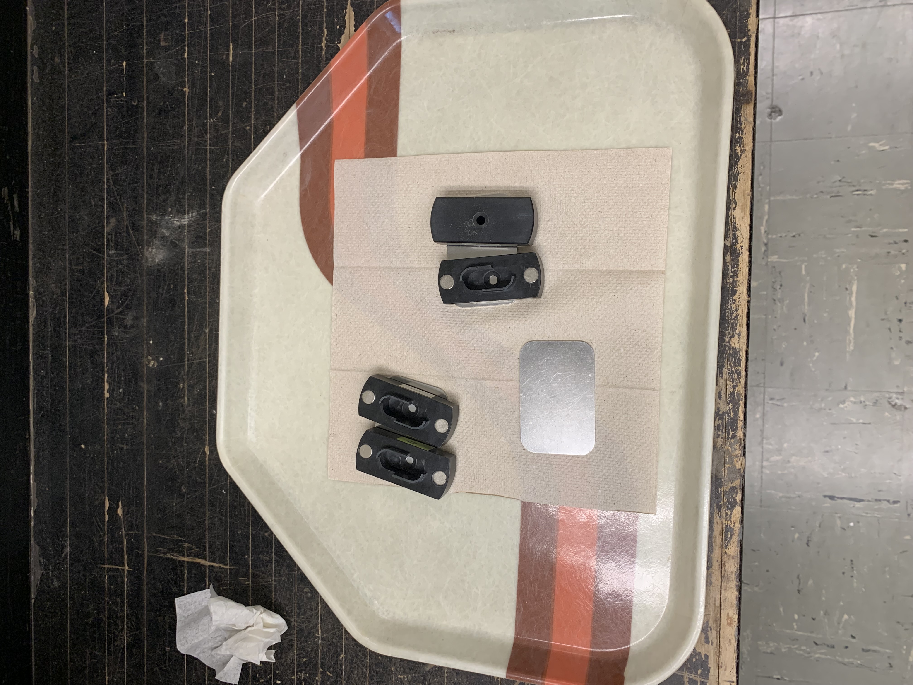
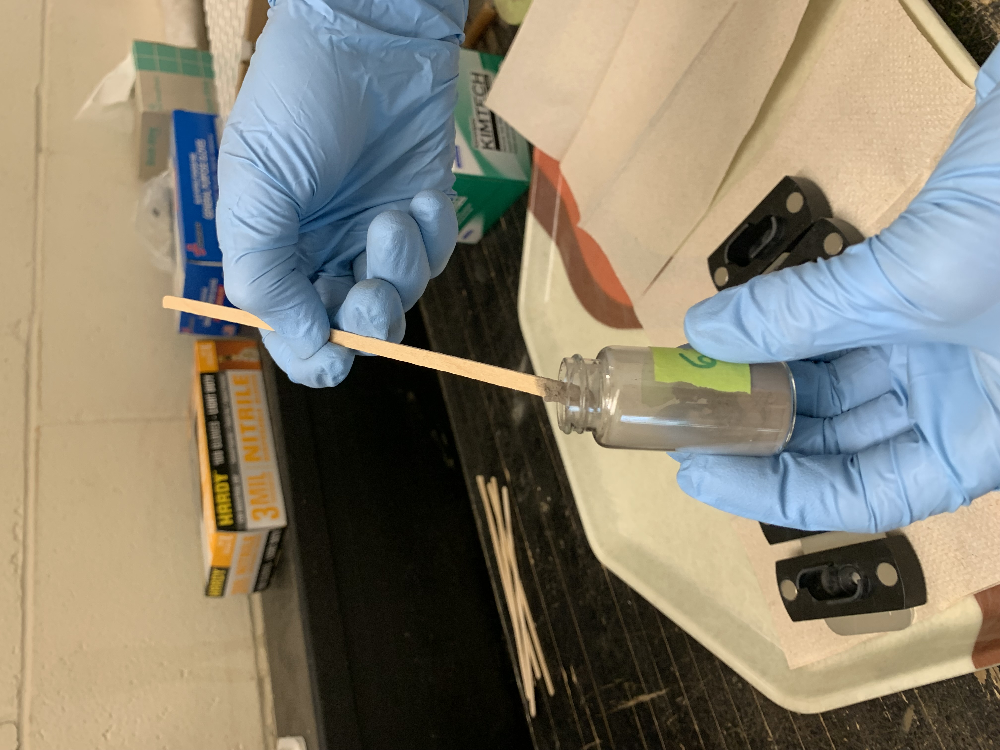
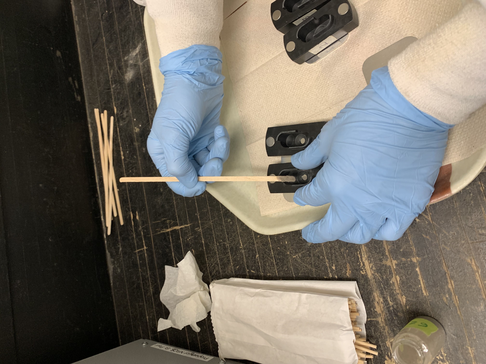
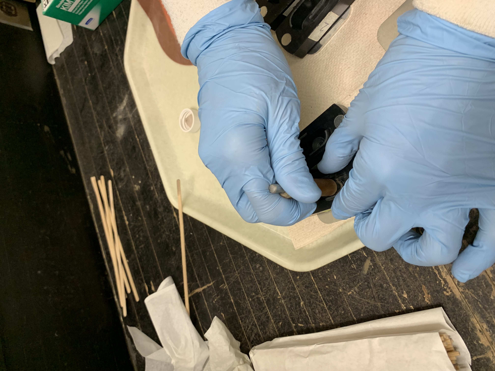
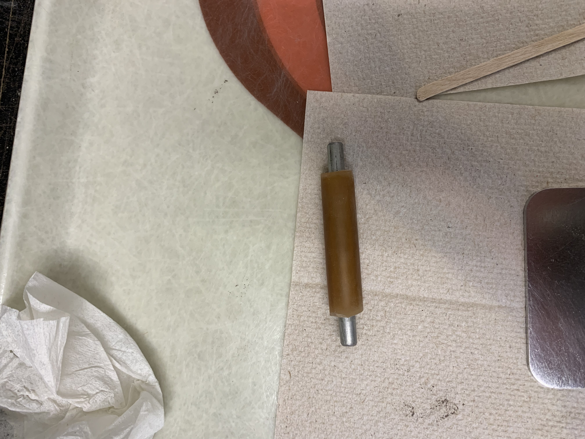
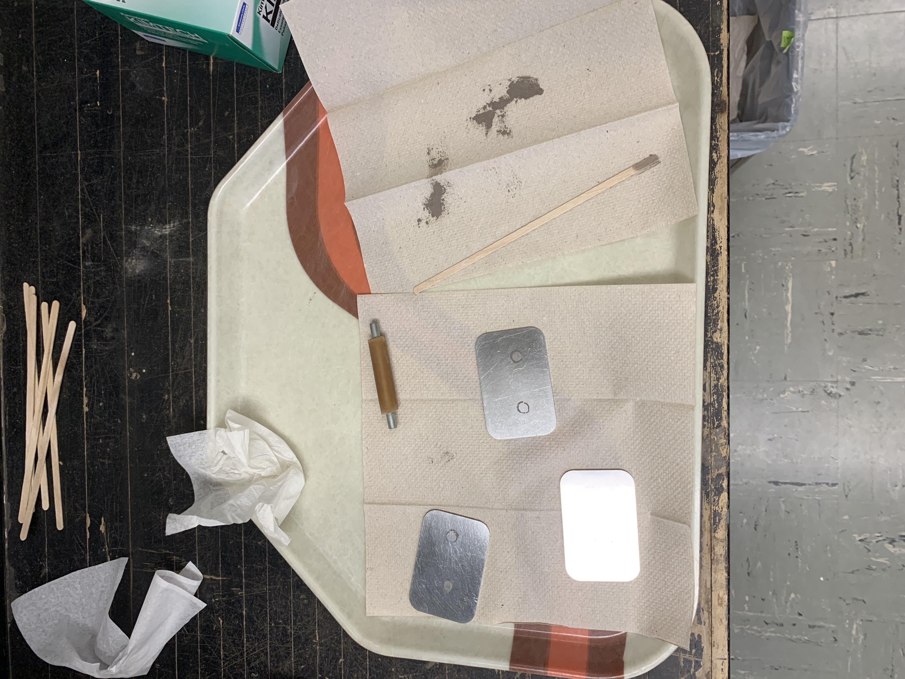
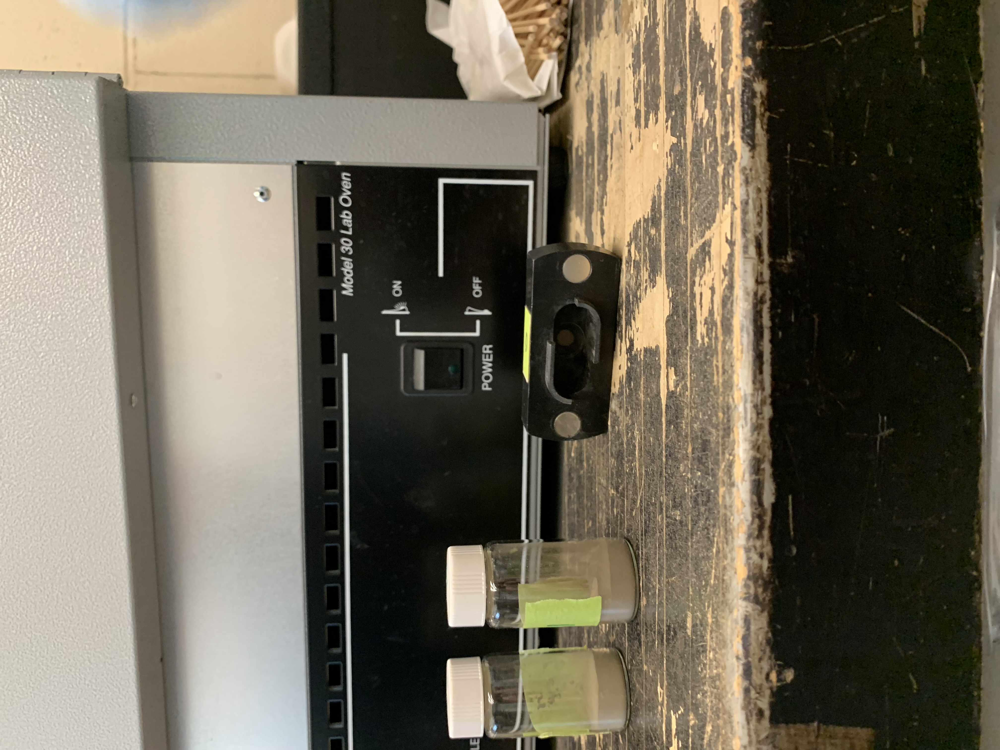

13 Mid-infrared Spectroscopy (MIR)
Last edited: 08NOV2023 NP
This section is not intended to be a standalone protocol, but rather notes to go along with the NRCS MIR Laboratory Instructions - as of May 2023, V6.6 is the current version. That protocol contains instructions for ball milling samples and using the MIR. Samples must be milled prior to being scanned.
The NRCS MIR protocol can be found in the Jelinski Lab shared drive. If you are not a member, please email Nic Jelinski.
13.1 Setup
- MIR machine needs to be plugged into an ethernet cable which goes into a cable that changes the IP address, which goes into the computer. Use the white cable in the third drawer from the right
- Has to be programmed to your computer → Nic coordinate with IT/Drea
- Drea has docs for Alpha installation, instructions for setting up IP address changer → she can send them to IT when this is getting set up
- Every time you turn it on, you run a PQ and OQ test
- When you connect the computer and machine, you should see a green circle on bottom right. Computer and MIR are talking
- Measure → optic setup and service → make sure it’s looking for the Alpha II (not the internet)
- Click agree, next, or close on all tests
- Runs PQ test (performance qualification). Measure BG (background) with reference on there (should always be on).
- PQ test will tell you if you need to change the desiccant; you’ll need to change it if the humidity is over 30%
- Look at measurement settings. Should be on Region 5 (data from Salina, KS), if not do it through the advanced tab
- Sample description is your sample code and file name.
- In advanced → change path the files save to → save to external drive. Have plugged into the computer the whole time. Make a new folder for each project
- On Drea’s computer/external drive, Adam’s folder is DSP Chippewa AL
- At end of PQ test, want to see a green circle in lower right
- Still in advanced: scans are already set up for how we’ll use it (parameters are for Salina, KS). Resulting spectrum is in absorbance.
- Measure → routine measurement. Drea also put it in a shortcut in the top menu. Blue test tube icon. We’ll toggle back and forth between background and sample. After you click background, move mouse to sample so you know where to click next
- In every routine measurement window, you’ll be changing the sample description, nothing else
13.2 Packing and Running Samples
- You must wear a mask and gloves while packing and running samples
- 4 replicates for each sample: pack each sample in the black sample holders 4 times

- Using a long narrow tongue depressor (sample holder), scoop a fingernail sized amount of sample from the scintillation vial into the well in the black sample holder
 
- Use the sample pusher to firmly press the sample into the well
 
- Tap the sample holder on your discard paper towel
 
- Note that in the top photo (above) the clean black sample holders are placed on silver trays. Keep them on the silver trays while packing. Do not lift the holder up before you’ve packed down the sample or it will all fall out
- Gently place the black holder onto the MIR. It’s attached by a magnet, so you don’t have to worry about it being in the right place. Don’t let it slam onto the MIR or the sample could fall out
- Open routine measurement → add sample name (description)
- Will scan and scan until it gets to 128 accepted scans; you shouldn’t have more than 25 rejected scans
- After the scan is done, the software doesn’t show you how many rejected scans there are. That’s okay.
- If you notice more than 25, consider rerunning the sample. Drea explained it as follows: If you have 26 rejections, that’s okay. The MIR still got 120 acceptable scans! If it’s higher, you can compare the spectra and if they are similar enough, that’s probably okay. If not, rerun the sample and follow the same steps. If the results are the same (ie, the steps are telling you to rerun it again), then that could be how the soil is. Drea mentioned some red Kentucky soils that were not running well.
- Flip black sample holder down once you’ve scanned the sample
- Run the background reference between each sample, even between the four replicates of your samples
- To show samples: right click, scale all spectra, show everything. BOOM! Can change colors, etc
- Wipe each black sample holder with a kimwipe between each new sample, like when you move from sample #1 to sample #2. That way, there’s no confusion about which sample is in which sample holder. One sample number in all four of the sample holders.
- Use a long Q-tip to get the kimwipe into the well
- Drea rinses the black sample holders once a week
- Every couple samples, either shake out or replace your paper towels
13.3 Exporting
- Software automatically saves each file to the external hard drive, so you can email them from there. Zip into a folder.
- Having a difficult time opening the files on mac when they are emailed as is.
13.4 Troubleshooting
If the software shows you the wrong display, meaning the menus look different, change the workplace display back to alpha II full access
If the software doesn’t have the Salina, KS parameters setup, the scanning lengths etc will be wrong. You can reset them manually - page 10-11 steps 34-36 of the NRCS protocol